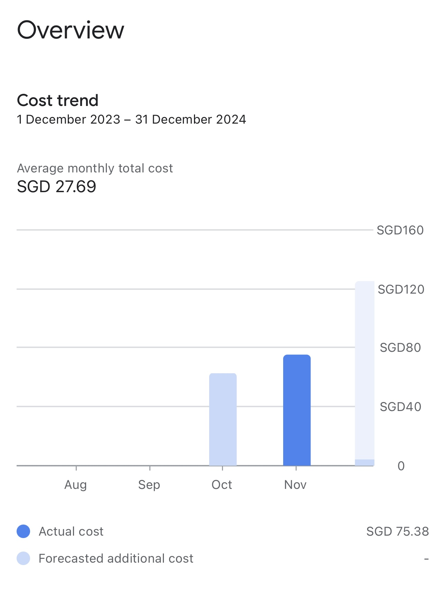
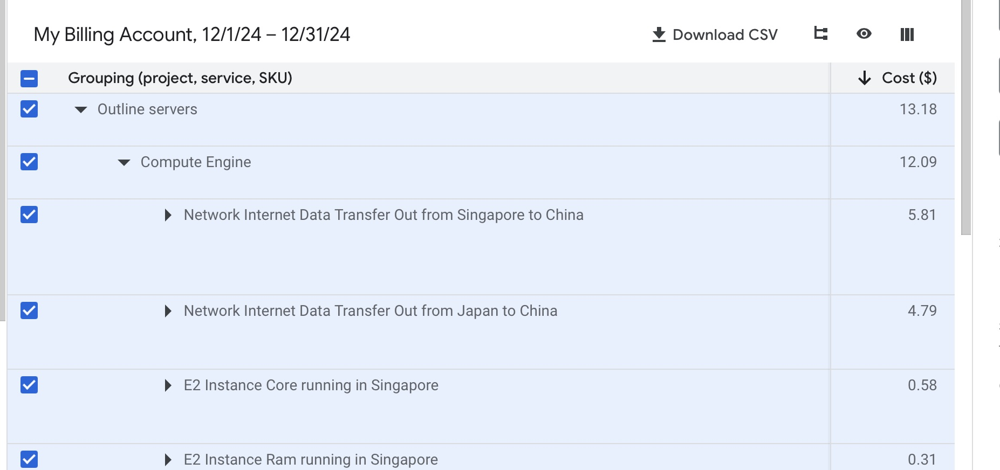
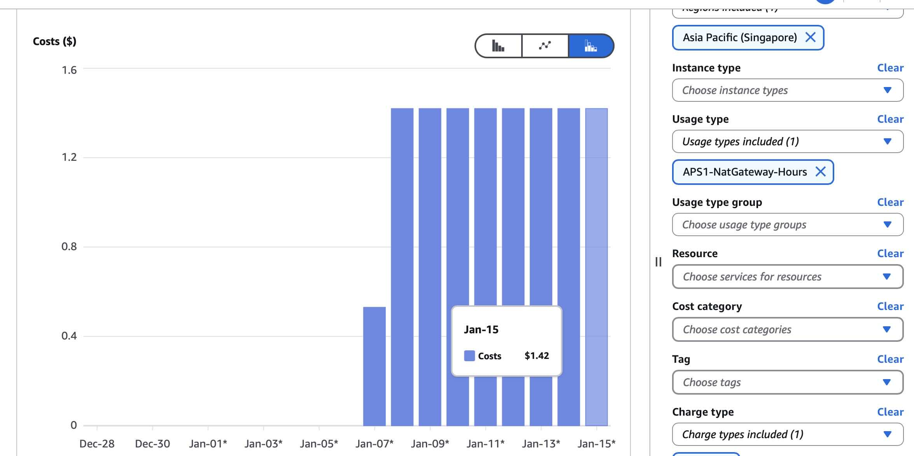

Analyse de mes factures de cloud | Original, traduit par l'IA
GCP
J’ai écrit un article intitulé Quelques plateformes cloud globales. Récemment, j’ai acquis plus d’expérience avec Google Cloud.
J’avais besoin d’un serveur proxy pour l’utiliser comme VPN afin de me connecter à des réseaux bloqués par le GFW. Je n’avais jamais essayé Google Cloud auparavant, alors j’ai décidé de le tester. Vous pouvez utiliser une carte de crédit OCBC pour obtenir 200 USD de crédits. Cependant, pour une raison quelconque, parfois vos dépenses ne seront pas déduites de vos crédits, mais seront facturées comme des dépenses réelles.
Le mois dernier, j’ai dépensé environ 75 SGD sur Google Cloud. C’était principalement pour une seule instance de compute engine (1 vCPU, 1 disque de 10GB, Jurong West, Singapour).
J’utilise Digital Ocean depuis longtemps. C’est beaucoup moins cher. Cela ne coûte que 6 USD par mois pour un Droplet (1 vCPU, 1GB de mémoire, 25GB SSD, Singapour).
Cependant, après avoir utilisé le calculateur de prix de Google Cloud, j’ai réalisé que le problème pourrait venir d’Outline. J’ai utilisé Outline Manager pour configurer le serveur proxy.
Le type de machine est un facteur important. Je dois faire plus de recherches à ce sujet.
Mise à jour :
Pour une instance e2-micro (2 vCPU, 1 GB de mémoire, 10 GB de disque) à Singapour, cela ne coûte que 7,98 SGD par mois. Outline Manager fonctionne bien. La raison pour laquelle j’ai fini par dépenser 75 SGD sur Google Cloud est probablement que j’ai initialement configuré 4 ou 5 serveurs. Plus tard, j’ai découvert que les frais ne pouvaient pas être déduits des crédits. Bien que j’aie arrêté les serveurs, les factures avaient déjà été générées, ce qui m’a coûté de l’argent.
En passant, au lieu de vérifier le type de machine actuel et de sélectionner manuellement le même type de machine et la même région sur la page de création de la machine, vous pouvez utiliser le bouton “Créer similaire” pour consulter rapidement le coût mensuel de cette machine.
 Source: cloud.google.com
Mise à jour : janvier 2025
Le coût élevé était probablement dû aux frais de transfert de données réseau.
Le transfert de données réseau depuis Singapour vers la Chine coûte 5,81 USD pour environ 19 Go de données.
 Source: cloud.google.com
AWS
Lorsque j’ai essayé Databricks (https://www.databricks.com), il a créé certaines ressources sur AWS que je ne suivais pas. Après une semaine, cela m’a coûté environ 12 USD. C’était troublant car je n’étais pas au courant de ces coûts à l’avance. La ressource impliquant des dépenses était une passerelle NAT dans la région Asie du Sud.
 Source: aws.amazon.com